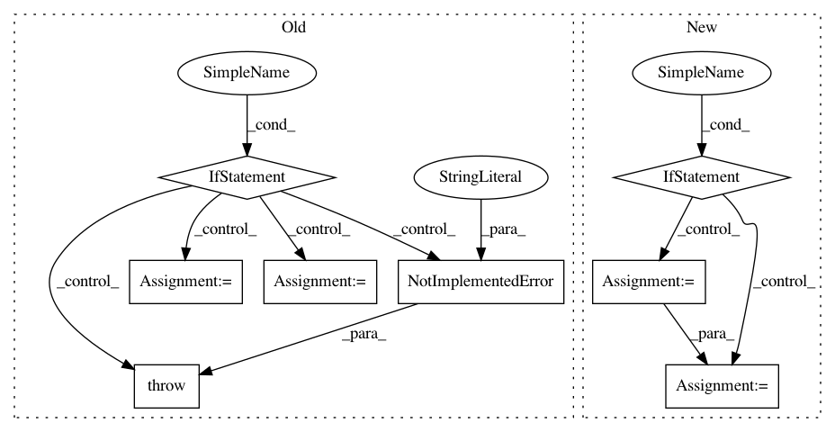

d1ac7b831ad36cd0e4bdd7980819f83208345148,gpflow/expectations.py,,_expectation,#Any#Any#Any#Any#Any#,512
Before Change
@dispatch(Gaussian, kernels.Sum, InducingPoints, kernels.Sum, InducingPoints)
@quadrature_fallback
def _expectation(p, kern1, feat1, kern2, feat2):
if feat1 != feat2:
raise NotImplementedError("Different features are not supported")
feat = feat1
crossexps = []
for k1, k2 in it.product(kern1.kern_list, kern2.kern_list):
if k1.on_separate_dims(k2):
eKxz1 = _expectation(p, k1, feat, None, None)
eKxz2 = _expectation(p, k2, feat, None, None)
result = eKxz1[:, :, None] * eKxz2[:, None, :]
else:
result = _expectation(p, k1, feat, k2, feat)
crossexps.append(result)
return functools.reduce(tf.add, crossexps)
// Product
After Change
crossexps = []
if kern1 == kern2 and feat1 == feat2: // avoid duplicate computation by using transposes
for i, k1 in enumerate(kern1.kern_list):
crossexps.append(expectation(p, (k1, feat1), (k1, feat1)))
for k2 in kern1.kern_list[:i]:
eKK = expectation(p, (k1, feat1), (k2, feat2))
eKK += tf.matrix_transpose(eKK)
crossexps.append(eKK)
else:
for k1, k2 in it.product(kern1.kern_list, kern2.kern_list):
crossexps.append(expectation(p, (k1, feat1), (k2, feat2)))
return functools.reduce(tf.add, crossexps)
// =================== Cross Kernel expectations (eK1zxK2xz) ===================
In pattern: SUPERPATTERN
Frequency: 3
Non-data size: 8
Instances
Project Name: GPflow/GPflow
Commit Name: d1ac7b831ad36cd0e4bdd7980819f83208345148
Time: 2018-02-07
Author: alex.ialongo@gmail.com
File Name: gpflow/expectations.py
Class Name:
Method Name: _expectation
Project Name: dmlc/gluon-nlp
Commit Name: 03b0e7061cf477fbeccb9c128ee76603df582d86
Time: 2018-09-04
Author: leonard@lausen.nl
File Name: scripts/word_embeddings/evaluate_pretrained.py
Class Name:
Method Name:
Project Name: NervanaSystems/nlp-architect
Commit Name: 9267d77a87ac5d6736953f4822deab36b20945c7
Time: 2020-09-22
Author: daniel.korat@intel.com
File Name: nlp_architect/models/absa/inference/inference.py
Class Name: SentimentInference
Method Name: run_multiple